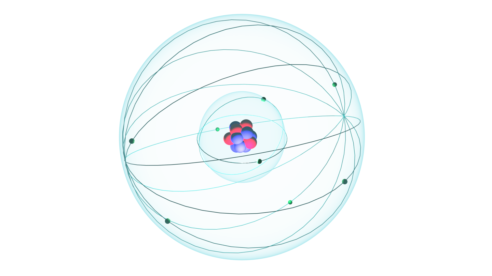

This is an simplified example of a quantum atomic model, designed by Erwin Schrödinger. proposed the quantum mechanical model of the atom, which treats electrons as matter waves. The blue cloud represents the orbital which electrons bounce around in. There are many different orbital types corresponding to different element groups in the Periodic table of elements.
I chose this model as it has been proven to be the most accurate out of all other models (Bohr, Rutherford, etc.). It shows that electrons don't actually move around in orbits, or set paths, but instead electrons move and bounce around in 'clouds of probability' or orbitals. This is the best method in determining where an electron could be as it is impossible to know the exact location of the electrons.
Science ILT
